![]()
library(tidyverse) # for data manipulation
library(metafor) # for meta-analysis
devtools::load_all() # load all utils functionsMeta-Analysis and Multi-Lab Replication studies
Replicability Crisis in Science?
Setup
Packages
Meta-analysis
Meta-analysis
The meta-analysis is a statistical procedure to combine evidence from a group of studies.
It is usually combined with a systematic review of the literature
Is somehow the gold-standard approach when we want to summarise and make inference on a specific research area
Effect size
To compare results from different studies, we should use a common metrics. Frequently meta-analysts use standardized effect sizes. For example the Pearson correlation or the Cohen’s \(d\).
\[ r = \frac{\sum{(x_i - \bar{x})(y_i - \bar{y})}}{\sqrt{\sum{(x_i - \bar{x})^2}\sum{(y_i - \bar{y})^2}}} \]
\[ d = \frac{\bar{x_1} - \bar{x_2}}{s_p} \]
\[ s_p = \sqrt{\frac{(n_1 - 1)s_1^2 + (n_2 - 1)s_2^2}{n_1 + n_2 - 2}} \]
Effect size
The advantage of standandardized effect size is that regardless the original variable, the intepretation and the scale is the same. For example the pearson correlation ranges between -1 and 1 and the Cohen’s \(d\) between \(- \infty\) and \(\infty\) and is intepreted as how many standard deviations the two groups differs.
Code
S <- matrix(c(1, 0.7, 0.7, 1), nrow = 2)
X <- MASS::mvrnorm(100, c(0, 2), S, empirical = TRUE)
par(mfrow = c(1,2))
plot(X, xlab = "x", ylab = "y", cex = 1.3, pch = 19,
cex.lab = 1.2, cex.axis = 1.2,
main = latex2exp::TeX(sprintf("$r = %.2f$", cor(X[, 1], X[, 2]))))
abline(lm(X[, 2] ~ X[, 1]), col = "firebrick", lwd = 2)
plot(density(X[, 1]), xlim = c(-5, 7), ylim = c(0, 0.5), col = "dodgerblue", lwd = 2,
main = latex2exp::TeX(sprintf("$d = %.2f$", lsr::cohensD(X[, 1], X[, 2]))),
xlab = "")
lines(density(X[, 2]), col = "firebrick", lwd = 2)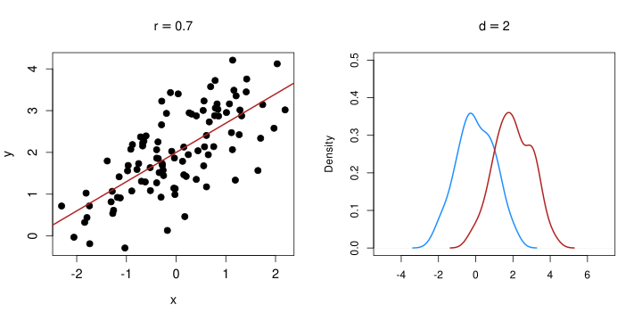
Effect size sampling variability
For example, there are multiple methods to estimate the Cohen’s \(d\) sampling variability. For example:
\[ V_d = \frac{n_1 + n_2}{n_1 n_2} + \frac{d^2}{2(n_1 + n_2)} \]
Each effect size has a specific formula for the sampling variability. The sample size is usually the most important information. Studies with high sample size have low sampling variability.
As the sample size grows and tends to infinity, the sampling variability approach zero.
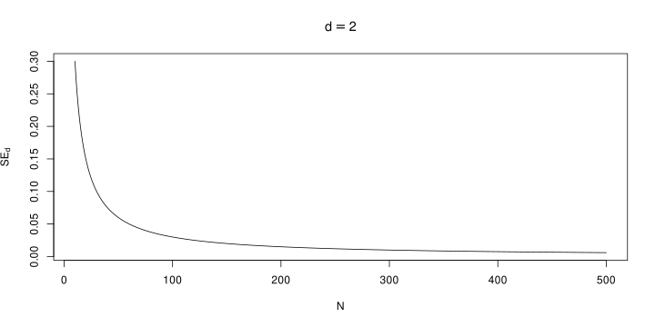
Notation
Meta-analysis notation is a little bit inconsistent in textbooks and papers. We define here some rules to simplify the work.
- \(k\) is the number of studies
- \(n_j\) is the sample size of the group \(j\) within a study
- \(y_i\) are the observed effect size included in the meta-analysis
- \(\sigma_i^2\) are the observed sampling variance of studies and \(\epsilon_i\) are the sampling errors
- \(\theta\) is the equal-effects parameter (see Equation 3)
- \(\delta_i\) is the random-effect (see Equation 5)
- \(\mu_\theta\) is the average effect of a random-effects model (see Equation 4)
- \(w_i\) are the meta-analysis weights (e.g., see Equation 1)
- \(\tau^2\) is the heterogeneity (see Equation 5)
- \(\Delta\) is the (generic) population effect size
- \(s_j^2\) is the variance of the group \(j\) within a study
Extra - Simulating Meta-Analysis
For the examples and plots I’m going to use simulated data1. We simulate unstandardized effect sizes (UMD) because the computations are easier and the estimator is unbiased (e.g., Viechtbauer 2005)
More specifically we simulate hypothetical studies where two independent groups are compared:
\[ \Delta = \overline{X_1} - \overline{X_2} \]
\[ SE_{\Delta} = \sqrt{\frac{s^2_1}{n_1} + \frac{s^2_2}{n_2}} \]
With \(X_{1_i} \sim \mathcal{N}(0, 1)\) and \(X_{2_i} \sim \mathcal{N}(\Delta, 1)\)
The main advantage is that, compared to standardized effect size, the sampling variability do not depends on the effect size itself, simplifying the computations.
Meta-analysis as a (weighted) average
Let’s imagine to have \(k = 10\) studies. The segments are the 95% confidence intervals.
Code
k <- 10
ni <- round(runif(k, 10, 100))
dat <- sim_studies(k, 0.5, 0, ni, ni)
qf <- quick_forest(dat)
qf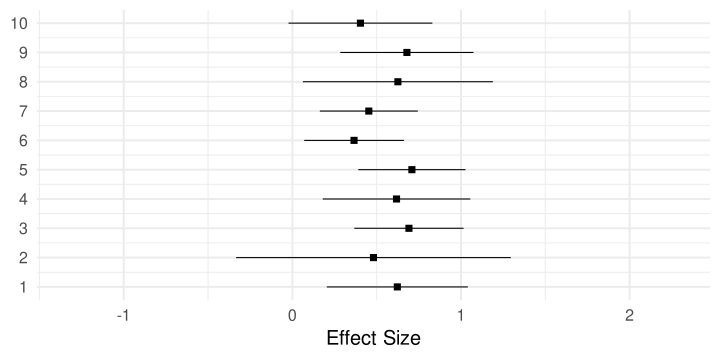
What could you say about the phenomenon?
Meta-analysis as a (weighted) average
We could say that the average effect is roughly ~0.5 and there is some variability around the average.
Code
avg <- mean(dat$yi)
qf + geom_vline(xintercept = avg, color = "firebrick") +
geom_segment(aes(x = yi, y = id-0.3, xend = avg, yend = id-0.3),
color = "firebrick")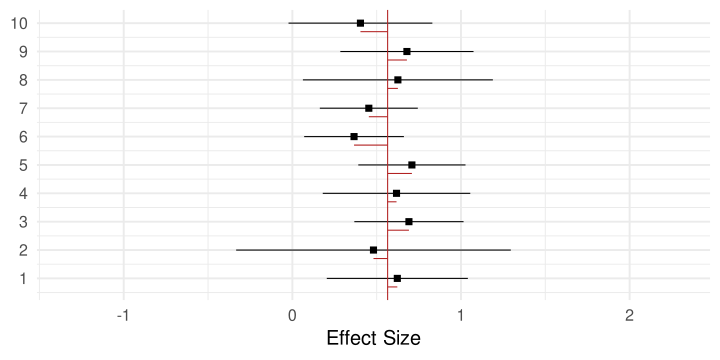
\[ \overline y = \frac{\sum_{i = 1}^k y_i}{k} \]
ybar <- mean(dat$yi)
ybar
#> [1] 0.5649149Meta-analysis as a (weighted) average
The simple average is a good statistics. But some studies are clearly more precise (narrower confidence intervals) than others i.e. the sampling variance is lower.
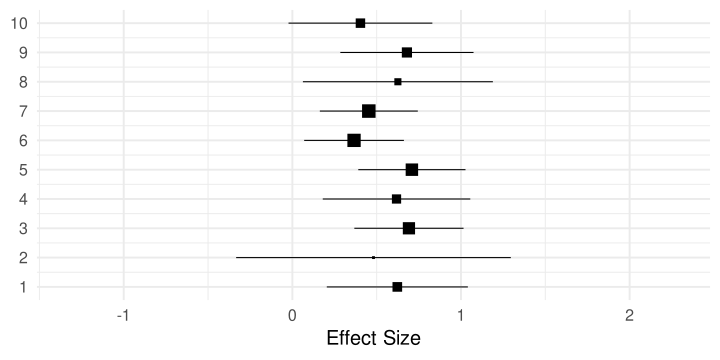
We can compute a weighted average where each study is weighted (\(w_i\)) by the inverse of the variance. This is called inverse-variance weighting. Clearly, a weighted average were all weights are the same reduced to a simple unweighted average.
\[ \overline y = \frac{\sum_{i = 1}^k y_iw_i}{\sum_{i = 1}^k w_i} \] \[ w_i = \frac{1}{v_i} \tag{1}\]
wi <- 1/dat$vi
ywbar <- weighted.mean(dat$yi, wi)
ywbar
#> [1] 0.5584582The value is (not so) different compared to the unweighted version (0.5649149). They are not exactly the same but given that weights are pretty homogeneous the two estimate are similar.
Meta-analysis as a (weighted) average
What we did is a very simple model but actually is a meta-analysis model. This is commonly known as equal-effects model (or fixed-effect) model.
Code
quick_forest(dat, weigth = TRUE) +
geom_vline(xintercept = ywbar, color = "firebrick") +
ggtitle("Weighted Average")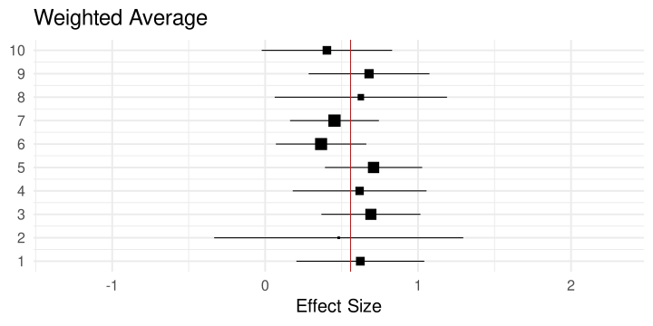
Equal-effects model (EE)
The EE model is the simplest meta-analysis model. The assumptions are:
- there is a unique, true effect size to estimate \(\theta\)
- each study is a more or less precise estimate of \(\theta\)
- there is no TRUE variability among studies. The observed variability is due to studies that are imprecise (i.e., sampling error)
- assuming that each study has a very large sample size, the observed variability is close to zero.
Formally, we can define the EE model as: \[ y_i = \theta + \epsilon_i \tag{2}\]
\[ \epsilon_i \sim \mathcal{N}(0, \sigma^2_i) \tag{3}\]
Where \(\sigma^2_i\) is the vector of sampling variabilities of \(k\) studies. This is a standard linear model but with heterogeneous sampling variances.
Equal-effects model (EE)
A crucial part of the EE model is that, assuming studies with very large sample sizes, \(\epsilon_i\) will tend to 0 and each study is an almost perfect estimation of \(\theta\). Let’s simulate two models, with \(k = 10\) studies and \(n = 30\) and \(n = 500\). The effect size is the same \(0.5\).
Code
dat_low <- sim_studies(10, 0.5, 0, 30, 30)
dat_high <- sim_studies(10, 0.5, 0, 500, 500)
qf_low <- quick_forest(dat_low) +
geom_vline(xintercept = 0.5, color = "firebrick") +
xlim(c(-2, 2)) +
ggtitle(latex2exp::TeX("$n_{1,2} = 30$"))
qf_high <- quick_forest(dat_high) +
geom_vline(xintercept = 0.5, color = "firebrick") +
xlim(c(-2, 2)) +
ggtitle(latex2exp::TeX("$n_{1,2} = 500$"))
plt_high_low <- cowplot::plot_grid(
qf_low,
qf_high
)
plt_high_low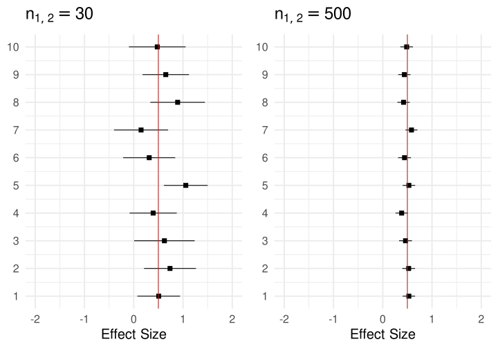
Equal-effects model (EE)
Clearly, as \(n\) increase, each study is essentially a perfect estimation of \(\theta\) as depicted in the theoretical figure (see slide 1.11).
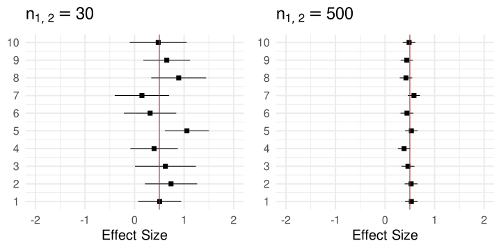
Are the EE assumptions realistic?
Are the EE assumptions realistic?
The EE model is appropriate if our studies are somehow exact replications of the exact same effect. We are assuming that there is no real variability.
. . .
However, meta-analysis rarely report the results of \(k\) exact replicates. It is more common to include studies with the same underlying objective but a roughly similar method.
- people with different ages or other participant-level differences
- different methodology
- …
Are the EE assumptions realistic?
In this case, even with extremely large studies, our effect could be larger in some conditions or smaller or absent in other conditions.
In other terms we are assuming that there could be some variability (i.e., heterogeneity) among studies that is independent from the sample size (or more generally the precision)
Random-effects model (RE)
We can extend the EE model including another source of variability, \(\tau^2\). \(\tau^2\) is the true heterogeneity among studies caused by methdological differences or intrisic variability in the phenomenon.
Formally we can extend the equation 3 as: \[ y_i = \mu_{\theta} + \delta_i + \epsilon_i \tag{4}\]
\[ \delta_i \sim \mathcal{N}(0, \tau^2) \tag{5}\]
\[ \epsilon_i \sim \mathcal{N}(0, \sigma^2_i) \]
Where \(\mu_{\theta}\) is the average effect size and \(\delta_i\) is the study-specific deviation from the average effect (regulated by \(\tau^2\)).
Given that we extended the EE model equation. Also the estimation of the average effect need to be extended. Basically the RE is still a weighted average but weights need to include also \(\tau^2\).
\[ \overline y = \frac{\sum_{i = 1}^k y_iw^*_i}{\sum_{i = 1}^k w^*_i} \tag{6}\]
\[ w^*_i = \frac{1}{v_i + \tau^2} \tag{7}\]
The consequence is that weights are different where extremely precise/imprecise studies will impact less the estimation of the average effect under the RE model compared to EE.
Random-effects model
The crucial difference with the EE model is that even with large \(n\), only the \(\mu_{\theta} + \delta_i\) are estimated (almost) without error. As long \(\tau^2 \neq 0\) there will be variability in the effect sizes.
Random-effects model
Again, we can easily demonstrate this with a simulation. We use the same simulation as slide 1.12 but including \(\tau^2 = 0.2\).
Code
dat_low <- sim_studies(10, 0.5, 0.2, 30, 30)
dat_high <- sim_studies(10, 0.5, 0.2, 500, 500)
qf_low <- quick_forest(dat_low) +
geom_vline(xintercept = 0.5, color = "firebrick") +
xlim(c(-3, 3)) +
ggtitle(latex2exp::TeX("$n_{1,2} = 30$"))
qf_high <- quick_forest(dat_high) +
geom_vline(xintercept = 0.5, color = "firebrick") +
xlim(c(-3, 3)) +
ggtitle(latex2exp::TeX("$n_{1,2} = 500$"))
qf_tau_high_low <- cowplot::plot_grid(
qf_low,
qf_high
)
qf_tau_high_low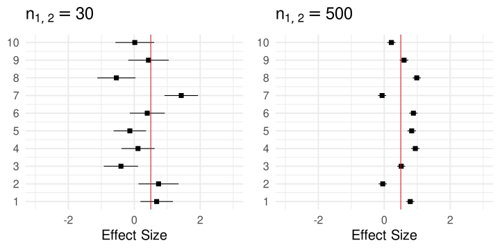
The main point is that even with \(n \to \infty\) the observed variance is not reduced as long \(\tau^2 \neq 0\).
Extra - Simulating Meta-Analysis
For the simulations, we can generate data from effect size and variance sampling distributions2. The unstandardized effect size is a mean difference between independent groups. The sampling distribution is:
\[ y_i \sim \mathcal{N}(\Delta, \frac{1}{n_1} + \frac{1}{n_2}) \]
Where \(\Delta\) is the population level effect size and \(n_{1,2}\) are the sample sizes of the two studies. The sampling variances are generated from a \(\chi^2\) distribution:
\[ \sigma_i^2 \sim \frac{\chi^2_{n_1 + n_2 - 2}}{n_1 + n_2 - 2} (\frac{1}{n_1} + \frac{1}{n_2}) \]
Clearly we can include \(\tau^2\) to include between-study variability. For an equal-effects model \(\Delta = \theta\) thus the equation is unchanged. For a random-effects model, \(\Delta = \theta_i = \mu_\theta + \delta_i\)
\[ y_i \sim \mathcal{N}(\Delta, \tau^2 + \frac{1}{n_1} + \frac{1}{n_2}) \]
The simulation is implemented in the sim_studies function:
sim_studies <- function(k, theta, tau2, n0, n1, summary = FALSE){
yi <- rnorm(k, theta, sqrt(tau2 + 1/n0 + 1/n1))
vi <- (rchisq(k, n0 + n1 - 2) / (n0 + n1 - 2)) * (1/n0 + 1/n1)
out <- data.frame(yi, vi, sei = sqrt(vi))
if(summary){
out <- summary_es(out)
}
return(out)
}dat <- sim_studies(k = 10, theta = 0.5, tau2 = 0.2, n0 = 30, n1 = 30)
dat
#> yi vi sei
#> 1 0.239972521 0.05110677 0.2260681
#> 2 0.060595945 0.05598818 0.2366182
#> 3 0.601009753 0.05284917 0.2298895
#> 4 -0.433374153 0.07347979 0.2710715
#> 5 1.060998657 0.08297724 0.2880577
#> 6 -0.009347895 0.08819882 0.2969829
#> 7 -0.303309080 0.05344227 0.2311758
#> 8 0.965465867 0.06425877 0.2534931
#> 9 1.303637758 0.05931308 0.2435428
#> 10 1.218931846 0.08062556 0.2839464Heterogeneity
We discussed so far about estimating the average effect (\(\theta\) or \(\mu_\theta\)). But how to estimate the heterogeneity?
There are several estimators for \(\tau^2\)
- Hunter–Schmidt
- Hedges
- DerSimonian–Laird
- Maximum-Likelihood
- Restricted Maximum-Likelihood (REML)
We will mainly use the REML estimator. See Viechtbauer (2005) and (Veroniki2016-zs?) for more details.
The Q Statistics3
The Q statistics is used to make statistical inference on the heterogeneity. Can be considered as a weighted sum of squares:
\[ Q = \sum^k_{i = 1}w_i(y_i - \hat \mu)^2 \]
Where \(\hat \mu\) is EE estimation (regardless if \(\tau^2 \neq 0\)) and \(w_i\) are the inverse-variance weights. Note that in the case of \(w_1 = w_2 ... = w_i\), Q is just a standard sum of squares (or deviance).
The Q Statistics
Given that we are summing up squared distances, they should be approximately \(\chi^2\) with \(df = k - 1\). In case of no heterogeneity (\(\tau^2 = 0\)) the observed variability is caused by sampling error only. The expectd value of the \(\chi^2\) is just the degrees of freedom (\(df = k - 1\)).
In case of \(\tau^2 \neq 0\), the expected value is \(k - 1 + \lambda\) where \(\lambda\) is a non-centrality parameter.
In other terms, if the expected value of \(Q\) exceed the expected value assuming no heterogeneity, we have evidence that \(\tau^2 \neq 0\).
The Q Statistics
Let’s try a more practical approach. We simulate a lot of meta-analysis with and without heterogeneity and we check the Q statistics.
Code
get_Q <- function(yi, vi){
wi <- 1/vi
theta_ee <- weighted.mean(yi, wi)
sum(wi*(yi - theta_ee)^2)
}
k <- 30
n <- 30
tau2 <- 0.1
nsim <- 1e4
Qs_tau2_0 <- rep(0, nsim)
Qs_tau2 <- rep(0, nsim)
res2_tau2_0 <- vector("list", nsim)
res2_tau2 <- vector("list", nsim)
for(i in 1:nsim){
dat_tau2_0 <- sim_studies(k = 30, theta = 0.5, tau2 = 0, n0 = n, n1 = n)
dat_tau2 <- sim_studies(k = 30, theta = 0.5, tau2 = tau2, n0 = n, n1 = n)
theta_ee_tau2_0 <- weighted.mean(dat_tau2_0$yi, 1/dat_tau2_0$vi)
theta_ee <- weighted.mean(dat_tau2$yi, 1/dat_tau2$vi)
res2_tau2_0[[i]] <- dat_tau2_0$yi - theta_ee_tau2_0
res2_tau2[[i]] <- dat_tau2$yi - theta_ee
Qs_tau2_0[i] <- get_Q(dat_tau2_0$yi, dat_tau2_0$vi)
Qs_tau2[i] <- get_Q(dat_tau2$yi, dat_tau2$vi)
}
df <- k - 1
par(mfrow = c(2,2))
hist(Qs_tau2_0, probability = TRUE, ylim = c(0, 0.08), xlim = c(0, 150),
xlab = "Q",
main = latex2exp::TeX("$\\tau^2 = 0$"))
curve(dchisq(x, df), 0, 100, add = TRUE, col = "firebrick", lwd = 2)
hist(unlist(res2_tau2_0), probability = TRUE, main = latex2exp::TeX("$\\tau^2 = 0$"), ylim = c(0, 2),
xlab = latex2exp::TeX("$y_i - \\hat{\\mu}$"))
curve(dnorm(x, 0, sqrt(1/n + 1/n)), add = TRUE, col = "dodgerblue", lwd = 2)
hist(Qs_tau2, probability = TRUE, ylim = c(0, 0.08), xlim = c(0, 150),
xlab = "Q",
main = latex2exp::TeX("$\\tau^2 = 0.1$"))
curve(dchisq(x, df), 0, 100, add = TRUE, col = "firebrick", lwd = 2)
hist(unlist(res2_tau2), probability = TRUE, main = latex2exp::TeX("$\\tau^2 = 0.1$"), ylim = c(0, 2),
xlab = latex2exp::TeX("$y_i - \\hat{\\mu}$"))
curve(dnorm(x, 0, sqrt(1/n + 1/n)), add = TRUE, col = "dodgerblue", lwd = 2)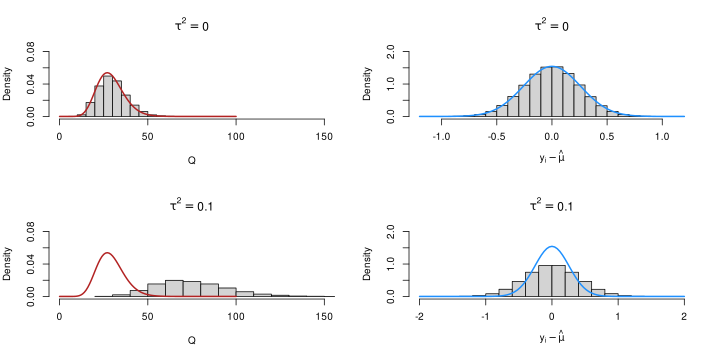
The Q Statistics
Let’s try a more practical approach. We simulate a lot of meta-analysis with and without heterogeneity and we check the Q statistics.
. . .
- clearly, in the presence of heterogeneity, the expected value of the Q statistics is higher (due to \(\lambda\)) and also residuals are larger.
. . .
- we can calculate a p-value for deviation from the \(\tau^2 = 0\) case as evidence agaist the absence of heterogeneity
Estimating \(\tau^2\)
The Q statistics is rarely used to directly represent the heterogeneity. The raw measure of heterogeneity is \(\tau^2\). The REML (restricted maximum likelihood) estimator is often used.
\[ \hat \tau^2 = \frac{\sum_{i = 1}^k w_i^2[(y_i - \hat \mu)^2 - \sigma^2_i]}{\sum_{i = 1}^k w_i^2} + \frac{1}{\sum_{i = 1}^k w_i} \]
Where \(\hat{\mu}\) is the weighted average (i.e., maximum likelihood estimation, see Equation 6 and Equation 7).
\(\tau^2\) as heterogeneity measure
- \(\tau^2\) is the direct measure of heterogeneity in meta-analysis
- it is intepreted as a standard deviation (or variance) of the distribution of true effects
- a phenomenon associated with an higher \(\tau^2\) is interpred as more variable
\(\tau^2\) as heterogeneity measure
Code
# we generate 1e5 values from a random-effect model with certain parameters and different tau2 values
# and check the expected distrubution of effect sizes
n <- 100
k <- 1e5
tau2 <- c(0, 0.1, 0.2, 0.5)
dats <- lapply(tau2, function(x) sim_studies(k, 0.5, x, n, n))
names(dats) <- tau2
dat <- bind_rows(dats, .id = "tau2")
dat$tau2 <- factor(dat$tau2)
dat$tau2 <- factor(dat$tau2, labels = latex2exp::TeX(sprintf("$\\tau^2 = %s$", levels(dat$tau2))))
dat |>
ggplot(aes(x = yi, y = after_stat(density))) +
geom_histogram(bins = 50) +
geom_vline(xintercept = 0.5, lwd = 0.5, color = "firebrick") +
facet_wrap(~tau2, labeller = label_parsed) +
ggtitle(latex2exp::TeX("Expected $y_i$ distribution, $d = 0.5$, $n_{1,2} = 100$")) +
xlab(latex2exp::TeX("$y_i$"))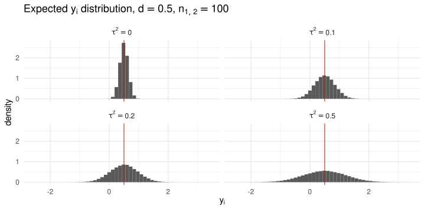
\(I^2\) (Higgins and Thompson 2002)
We have two sources of variability in a random-effects meta-analysis, the sampling variabilities \(\sigma_i^2\) and \(\tau^2\). We can use the \(I^2\) to express the interplay between the two. \[ I^2 = 100\% \times \frac{\hat{\tau}^2}{\hat{\tau}^2 + \tilde{v}} \tag{8}\]
\[ \tilde{v} = \frac{(k-1) \sum w_i}{(\sum w_i)^2 - \sum w_i^2}, \]
Where \(\tilde{v}\) is the typical sampling variability. \(I^2\) is intepreted as the proportion of total variability due to real heterogeneity (i.e., \(\tau^2\))
\(I^2\) (Higgins and Thompson 2002)4
Note that we can have the same \(I^2\) in two completely different meta-analysis. An high \(I^2\) does not represent high heterogeneity. Let’s assume to have two meta-analysis with \(k\) studies and small (\(n = 30\)) vs large (\(n = 500\)) sample sizes.
Let’s solve Equation 8 for \(\tau^2\) (using filor::tau2_from_I2()) and we found that the same \(I^2\) can be obtained with two completely different \(\tau^2\) values:
n_1 <- 30
vi_1 <- 1/n_1 + 1/n_1
tau2_1 <- filor::tau2_from_I2(0.8, vi_1)
tau2_1
#> [1] 0.2666667
n_2 <- 500
vi_2 <- 1/n_2 + 1/n_2
tau2_2 <- filor::tau2_from_I2(0.8, vi_2)
tau2_2
#> [1] 0.016\(I^2\) (Higgins and Thompson 2002)
n_1 <- 30
vi_1 <- 1/n_1 + 1/n_1
tau2_1 <- filor::tau2_from_I2(0.8, vi_1)
tau2_1
#> [1] 0.2666667
n_2 <- 500
vi_2 <- 1/n_2 + 1/n_2
tau2_2 <- filor::tau2_from_I2(0.8, vi_2)
tau2_2
#> [1] 0.016. . .
In other terms, the \(I^2\) can be considered a good index of heterogeneity only when the total variance (\(\tilde{v} + \tau^2\)) is the same.
Meta-analysis in R
Meta-analysis in R
In R there are several packages to conduct a meta-analysis. For me, the best package is metafor (Viechtbauer 2010). The package support all steps in meta-analysis providing also an amazing documentation:
Equal-effects model in R
Disclaimer: we are omitting the important part of collecting the information from published studies and calculating the (un)standardized effect sizes. Clerly this part is highly dependent on the actual dataset.
There are few useful resources:
Equal-effects model in R
We can simulate an EE dataset (i.e., \(\tau^2 = 0\)) and then fit the model with metafor:
theta <- 0.3
k <- 30 # number of studies
n <- round(runif(k, 10, 60)) # random sample sizes with a plausible range
dat <- sim_studies(k = k, theta = theta, tau2 = 0, n0 = n, n1 = n)
dat$n <- n # n1 and n2 are the same, put only one
head(dat)
#> yi vi sei n
#> 1 0.805614130 0.08263361 0.2874606 32
#> 2 0.260807459 0.04749784 0.2179400 47
#> 3 0.675372623 0.06075145 0.2464781 38
#> 4 0.009179529 0.05057025 0.2248783 29
#> 5 0.446279600 0.09250380 0.3041444 22
#> 6 0.343721214 0.12479153 0.3532584 18Equal-effects model in R
We can start by some summary statistics:
# unweighted summary statistics for the effect
summary(dat$yi)
#> Min. 1st Qu. Median Mean 3rd Qu. Max.
#> -0.2561 0.2013 0.3380 0.3123 0.4370 0.8056
# unweighted summary statistics for the variances
summary(dat$vi)
#> Min. 1st Qu. Median Mean 3rd Qu. Max.
#> 0.03474 0.04835 0.07266 0.08351 0.10501 0.23412
# sample sizes
summary(dat$n) # n0 and n1 are the same
#> Min. 1st Qu. Median Mean 3rd Qu. Max.
#> 10.00 17.25 31.00 31.40 46.75 55.00Equal-effects model in R
Then we can use the metafor::rma.uni() function (or more simply metafor::rma()) providing the effect size, variances and method = "EE" to specify that we are fitting an equal-effects model.
fit_ee <- rma(yi, vi, method = "EE", data = dat)
summary(fit_ee)
#>
#> Equal-Effects Model (k = 30)
#>
#> logLik deviance AIC BIC AICc
#> 1.3303 20.4782 -0.6605 0.7407 -0.5177
#>
#> I^2 (total heterogeneity / total variability): 0.00%
#> H^2 (total variability / sampling variability): 0.71
#>
#> Test for Heterogeneity:
#> Q(df = 29) = 20.4782, p-val = 0.8774
#>
#> Model Results:
#>
#> estimate se zval pval ci.lb ci.ub
#> 0.3338 0.0469 7.1211 <.0001 0.2420 0.4257 ***
#>
#> ---
#> Signif. codes: 0 '***' 0.001 '**' 0.01 '*' 0.05 '.' 0.1 ' ' 1Equal-effects model in R
We can easily show that the results is the same as performing a simple weighted average using study-specific variances as weight:
wi <- 1/dat$vi
weighted.mean(dat$yi, wi)
#> [1] 0.3338458
summary(fit_ee)
#>
#> Equal-Effects Model (k = 30)
#>
#> logLik deviance AIC BIC AICc
#> 1.3303 20.4782 -0.6605 0.7407 -0.5177
#>
#> I^2 (total heterogeneity / total variability): 0.00%
#> H^2 (total variability / sampling variability): 0.71
#>
#> Test for Heterogeneity:
#> Q(df = 29) = 20.4782, p-val = 0.8774
#>
#> Model Results:
#>
#> estimate se zval pval ci.lb ci.ub
#> 0.3338 0.0469 7.1211 <.0001 0.2420 0.4257 ***
#>
#> ---
#> Signif. codes: 0 '***' 0.001 '**' 0.01 '*' 0.05 '.' 0.1 ' ' 1Random-effects model in R
The syntax for a random-effects model is the same, we just need to use method = "REML" (or another \(\tau^2\) estimation method)
fit_re <- rma(yi, vi, method = "REML", data = dat)
summary(fit_re)
#>
#> Random-Effects Model (k = 30; tau^2 estimator: REML)
#>
#> logLik deviance AIC BIC AICc
#> 0.8897 -1.7793 2.2207 4.9553 2.6822
#>
#> tau^2 (estimated amount of total heterogeneity): 0 (SE = 0.0160)
#> tau (square root of estimated tau^2 value): 0
#> I^2 (total heterogeneity / total variability): 0.00%
#> H^2 (total variability / sampling variability): 1.00
#>
#> Test for Heterogeneity:
#> Q(df = 29) = 20.4782, p-val = 0.8774
#>
#> Model Results:
#>
#> estimate se zval pval ci.lb ci.ub
#> 0.3338 0.0469 7.1211 <.0001 0.2420 0.4257 ***
#>
#> ---
#> Signif. codes: 0 '***' 0.001 '**' 0.01 '*' 0.05 '.' 0.1 ' ' 1Random-effects model in R
We can easily compare the models using the compare_rma() function:
filor::compare_rma(fit_ee, fit_re) |>
round(5)
#> fit_ee fit_re
#> b 0.33385 0.33385
#> se 0.04688 0.04688
#> zval 7.12107 7.12107
#> pval 0.00000 0.00000
#> ci.lb 0.24196 0.24196
#> ci.ub 0.42573 0.42573
#> I2 0.00000 0.00000
#> tau2 0.00000 0.00000What do you think? are there differences between the two models? What could be the reasons?
Random-effects model in R
Clearly, given that we simulated \(\tau^2 = 0\) the RE model results is very close (if not equal) to the EE model. We can simulate a RE model:
tau2 <- 0.2
dat <- sim_studies(k = k, theta = theta, tau2 = tau2, n0 = n, n1 = n)
fit_re <- rma(yi, vi, method = "REML", data = dat)
summary(fit_re)
#>
#> Random-Effects Model (k = 30; tau^2 estimator: REML)
#>
#> logLik deviance AIC BIC AICc
#> -28.2810 56.5621 60.5621 63.2967 61.0236
#>
#> tau^2 (estimated amount of total heterogeneity): 0.3384 (SE = 0.1095)
#> tau (square root of estimated tau^2 value): 0.5817
#> I^2 (total heterogeneity / total variability): 84.00%
#> H^2 (total variability / sampling variability): 6.25
#>
#> Test for Heterogeneity:
#> Q(df = 29) = 203.0597, p-val < .0001
#>
#> Model Results:
#>
#> estimate se zval pval ci.lb ci.ub
#> 0.2965 0.1183 2.5071 0.0122 0.0647 0.5283 *
#>
#> ---
#> Signif. codes: 0 '***' 0.001 '**' 0.01 '*' 0.05 '.' 0.1 ' ' 1Forest Plot
The most common plot to represent meta-analysis results is the forest plot:
forest(fit_re)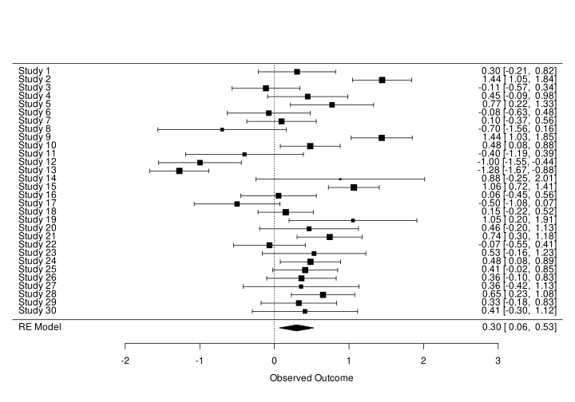
Forest Plot
The most common plot to represent meta-analysis results is the forest plot:
- The
xaxis represent the effect size - The
yaxis represent the studies - The
size of the squareis the weight of that study (\(w_i = 1/\sigma_i^2\)) - The
intervalis the 95% confidence interval - The
diamondis the estimated effect and the 95% confidence interval
Forest Plot
It is also common to plot studies ordering by the size of the effect, showing asymmetries or other patterns:
forest(fit_re)Multilab Studies
Multilab Studies
So far we reasoned about collecting published studies and conducting a meta-analysis. Despite pooling evidence from multiple studies there are several limitations:
. . .
- publication bias
. . .
- small number of studies (\(k\)) thus low power and low estimation precision
. . .
- the estimated \(\tau^2\) could be high because the methdological heterogeneity is high –> each research group use a different methodology
Multilab Studies
With multilab studies we define a new data collection where different research group conduct an experiment with a similar (or the exact same) methodology. In this way we can:
. . .
- eliminate the publication bias
. . .
- calibrate the number of studies (\(k\)) and observations (\(n\)) according to our criteria (power, precision, etc.)
Multilab Studies and meta-analysis
From a statistical point of view, the only difference is the source of the data (planned and collected vs collected from the literature). In fact, a multilab study can be analyzed also using standard meta-analysis tools.
. . .
When intepreting the results we could highlight some differences:
. . .
- \(\tau^2\) in standard meta-analysis is considered the true variability of the phenomenon. In multilab studies (assuming an exact replication approach) should be low or close to zero.
. . .
- In standard meta-analysis we could try to explain \(\tau^2\) using meta-regression (e.g., putting the average participant age as predictor) while in multilab studies we could plan to use the same age thus removing the age effect.
Extra - Planning a Multilab Study
Let’s imagine to plan a multilab study with the same setup as the previous meta-analysis. We are not collecting data from the literature but we want to know the number of studies \(k\) that we need to achieve e.g. a good statistical Power.
. . .
We define power as the probability of correctly rejecting the null hypothesis of no effect when the effect is actually present
Extra - Planning a Multilab Study
We can do a Power analysis using Monte Carlo simulations:
- simulate a meta-analysis given a set of parameters
- fit the meta-analysis model
- extract the p-value
- repeat the steps 1-3 a lot of times e.g. 10000
- count the number of significant (e.g., \(\leq \alpha\)) p-values
Extra - Planning a Multilab Study
We can implement a simple simulation as:
library(metafor)
library(ggplot2)
# set.seed(2023)
k <- seq(10, 100, 10)
n <- seq(10, 100, 20)
es <- 0.3
tau2 <- 0.1
alpha <- 0.05
nsim <- 1e3
sim <- tidyr::expand_grid(k, n, es, tau2)
sim$power <- 0
# handle errors, return NA
srma <- purrr::possibly(rma, otherwise = NA)
for(i in 1:nrow(sim)){ # iterate for each condition
pval <- rep(0, nsim)
for(j in 1:nsim){ # iterate for each simulation
dat <- sim_studies(k = sim$k[i],
theta = sim$es[i],
tau2 = sim$tau2[i],
n0 = sim$n[i],
n1 = sim$n[i])
fit <- srma(yi, vi, data = dat, method = "REML")
pval[j] <- fit$pval
}
sim$power[i] <- mean(pval <= alpha) # calculate power
filor::pb(nrow(sim), i)
}
saveRDS(sim, here("04-meta-analysis/objects/power-example.rds"))Extra - Planning a Multilab Study
Then we can plot the results:
Code
sim <- readRDS(here("slides/02-meta-analysis/objects/power-example.rds"))
title <- "$\\mu_\\theta = 0.3$, $\\tau^2 = 0.1$, $\\alpha = 0.05"
sim |>
ggplot(aes(x = k, y = power, group = n, color = factor(n))) +
geom_line(lwd = 1) +
xlab("Number of Studies (k)") +
ylab("Power") +
labs(color = "Sample Size") +
theme(legend.position = "bottom") +
ggtitle(latex2exp::TeX(title))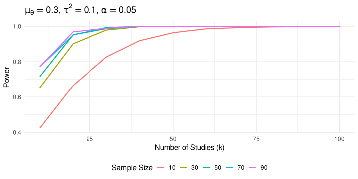
Extra - Planning a Multilab Study
This is a flexible way to simulate and plan a multilab study:
- We could prefer increasing \(k\) (i.e., the research units) and limiting \(n\) thus reducing the effort for each lab. The downside are difficulties in managing multiple labs, increased dropout rate, difficulty in reaching the planned \(k\)
- We could prefer increasing \(n\) and limiting \(k\). Each lab need to put more resources but the overall project could be easier.
- We could try to estimate a cost function according to several parameters and find the best trade-off as implemented in Hedges and Schauer (2021)
Publication Bias (PB)
What do you think about PB? What do you know? Causes? Remedies?
Publication Bias (PB)
The PB is one of the most problematic aspects of meta-analysis. Essentially the probability of publishing a paper (~and thus including into the meta-analysis) is not the same regardless the result. Clearly we could include also the gray literature to mitigate the problem.
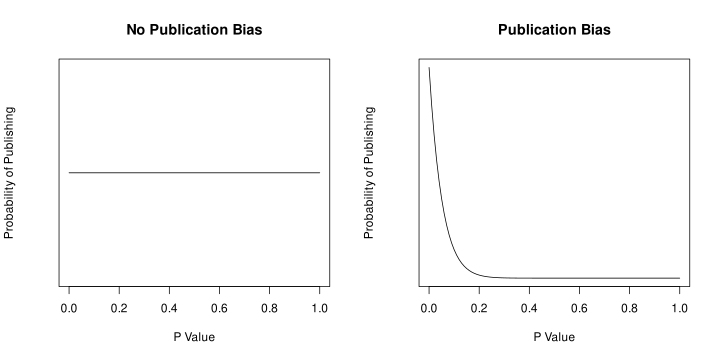
Publication Bias Disclaimer!
We cannot (completely) solve the PB using statistical tools. The PB is a problem related to the publishing process and publishing incentives (significant results are more catchy and easy to explain).
. . .
- pre-registrations, multi-lab studies, etc. can (almost) completely solve the problem filling the literature with unbiased studies (at least from the publishing point of view)
. . .
- there are statistical tools to detect, estimate and correct for the publication bias. As every statistical method, they are influenced by statistical assumptions, number of studies and sample size, heterogeneity, etc.
Publication Bias (PB) - The Big Picture5
Publication Bias (PB) - Funnel Plot
The first tool is called funnel plot. This is a visual tool to check the presence of asymmetry that could be caused by publication bias. If meta-analysis assumptions are respected, and there is no publication bias:
- effects should be normally distributed around the average effect
- more precise studies should be closer to the average effect
- less precise studies could be equally distributed around the average effect
Let’s simulate a lot of studies to show:
set.seed(2023)
k <- 1e3
n <- round(runif(k, 10, 200))
dat <- sim_studies(k = k, theta = 0.5, tau2 = 0, n0 = n, n1 = n)
fit <- rma(yi, vi, method = "EE", data = dat)Publication Bias (PB) - Funnel Plot
Let’s plot the distribution of the data:
hist(dat$yi)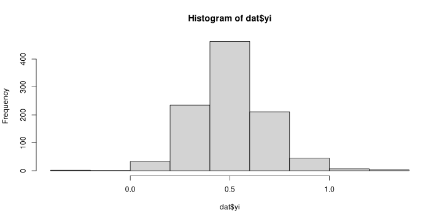
The distribution is clearly normal and centered on the true simulated value. Now let’s add the precision (in this case standard error thus \(\sqrt{\sigma_i^2}\)) on the y-axis.
Publication Bias (PB) - Funnel Plot
Note that the y axis is reversed so high-precise studies (\(\sqrt{\sigma_i^2}\) close to 0) are on top.
Code
plot(dat$yi, dat$sei, ylim = rev(range(dat$sei)),
xlab = latex2exp::TeX("$y_i$"),
ylab = latex2exp::TeX("$\\sqrt{\\sigma_i^2}$"),
pch = 19,
col = scales::alpha("firebrick", 0.5))
abline(v = fit$b[[1]], col = "black", lwd = 1.2)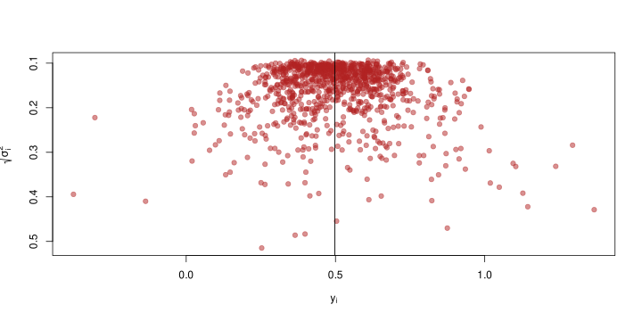
Publication Bias (PB) - Funnel Plot
The plot assume the typical funnel shape and there are not missing spots on the at the bottom. The presence of missing spots is a potential index of publication bias.
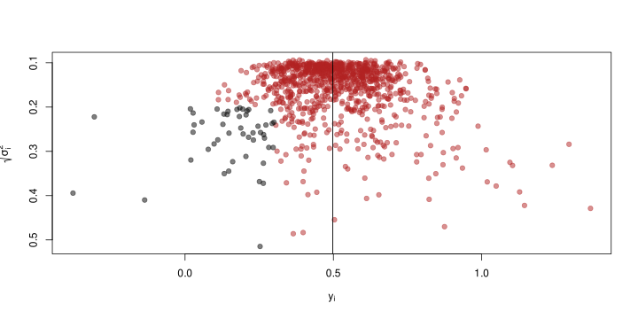
Publication Bias (PB) - Funnel Plot
The plot assume the typical funnel shape and there are not missing spots on the at the bottom. The presence of missing spots is a potential index of publication bias.
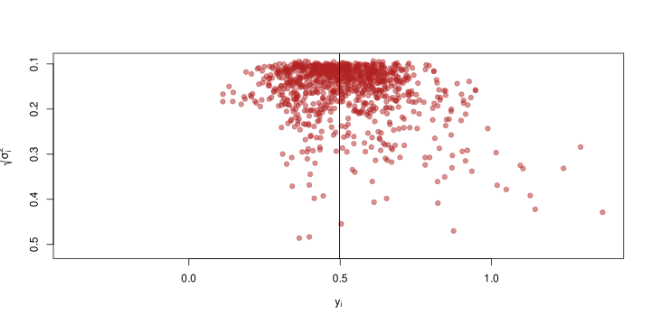
Robustness to PB - Fail-safe N
The Fail-safe N (Rosenthal 1979) idea is very simple. Given a meta-analysis with a significant result (i.e., \(p \leq \alpha\)). How many null studies (i.e., \(\hat \theta = 0\)) do I need to obtain \(p > \alpha\)?
metafor::fsn(yi, vi, data = dat)
#>
#> Fail-safe N Calculation Using the Rosenthal Approach
#>
#> Observed Significance Level: <.0001
#> Target Significance Level: 0.05
#>
#> Fail-safe N: 4396757Robustness to PB - Fail-safe N
There are several criticism to the Fail-safe N procedure:
. . .
- is not actually detecting the PB but suggesting the required PB size to remove the effect. A very large N suggest that even with PB, it is unlikely that the results could be completely changed by actually reporting null studies
. . .
- Orwin (1983) proposed a new method calculating the number of studies required to reduce the effect size to a given target
. . .
Detecting PB - Egger Regression
A basic method to test the funnel plot asymmetry is using an the Egger regression test. Basically we calculate the relationship between \(y_i\) and \(\sqrt{\sigma^2_i}\). In the absence of asimmetry, the line slope should be not different from 0.
We can use the metafor::regtest() function:
egger <- regtest(fit)
egger
#>
#> Regression Test for Funnel Plot Asymmetry
#>
#> Model: fixed-effects meta-regression model
#> Predictor: standard error
#>
#> Test for Funnel Plot Asymmetry: z = 1.0847, p = 0.2781
#> Limit Estimate (as sei -> 0): b = 0.4821 (CI: 0.4521, 0.5122)Publication Bias (PB) - Egger Regression
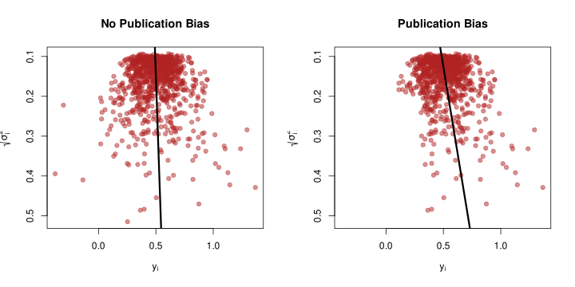
This is a standard (meta) regression thus the number of studies, the precision of each study and heterogeneity influence the reliability (power, type-1 error rate, etc.) of the procedure.
Correcting PB - Trim and Fill
The Trim and Fill method (Duval and Tweedie 2000) is used to impute the hypothetical missing studies according to the funnel plot and recomputing the meta-analysis effect. Shi and Lin (Shi and Lin 2019) provide an updated overview of the method with some criticisms.
. . .
Let’s simulate again a publication bias with \(k = 100\) studies:
set.seed(2023)
k <- 100 # we increased k to better show the effect
theta <- 0.5
tau2 <- 0.1
dat <- sim_pub_bias(selmodel = list(method = "2step", param = "pval", th = 0.05, side = "<="), k = k, theta = theta, tau2 = tau2, nmin = 10, nmax = 200)
fit <- rma(yi, vi, data = dat, method = "REML")Correcting PB - Trim and Fill
Now we can use the metafor::trimfill() function:
taf <- metafor::trimfill(fit)
taf
#>
#> Estimated number of missing studies on the left side: 29 (SE = 6.4513)
#>
#> Random-Effects Model (k = 129; tau^2 estimator: REML)
#>
#> tau^2 (estimated amount of total heterogeneity): 0.1382 (SE = 0.0203)
#> tau (square root of estimated tau^2 value): 0.3718
#> I^2 (total heterogeneity / total variability): 88.56%
#> H^2 (total variability / sampling variability): 8.74
#>
#> Test for Heterogeneity:
#> Q(df = 128) = 1073.8812, p-val < .0001
#>
#> Model Results:
#>
#> estimate se zval pval ci.lb ci.ub
#> 0.4851 0.0357 13.5951 <.0001 0.4152 0.5551 ***
#>
#> ---
#> Signif. codes: 0 '***' 0.001 '**' 0.01 '*' 0.05 '.' 0.1 ' ' 1The trim-and-fill estimates that 29 are missing. The new effect size after including the studies is reduced and closer to the simulated value (but in this case still significant).
Correcting PB - Trim and Fill
We can also visualize the funnel plot highligting the points that are included by the method.
funnel(taf)Code
funnel(taf)
egg <- regtest(fit)
egg_npb <- regtest(taf)
se <- seq(0,1.8,length=100)
lines(coef(egg$fit)[1] + coef(egg$fit)[2]*se, se, lwd=3, col = "black")
lines(coef(egg_npb$fit)[1] + coef(egg_npb$fit)[2]*se, se, lwd=3, col = "firebrick")
legend("topleft", legend = c("Original", "Corrected"), fill = c("black", "firebrick"))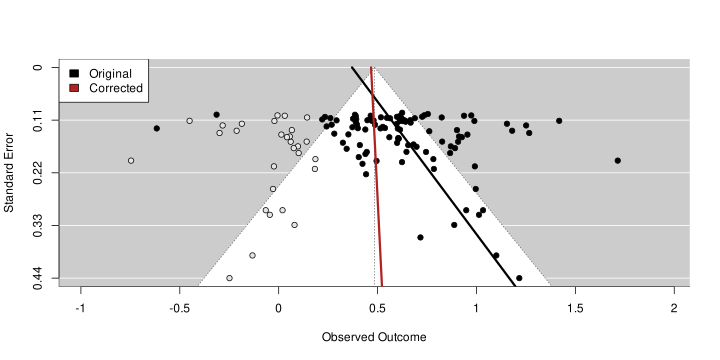
Correcting PB - Selection Models (SM)
. . .
- SM assume a relationship between the p-value and the probability of publishing
. . .
- SM estimate this relationship from available studies and correct the average effect
. . .
- The models are complicated (number of parameters) and need a large \(k\)
. . .
- They provide a very elegant framework to formalize the publication bias supporting simulations and methods development
SM - Publication Bias Function
- The publication bias can be formalized using a weight function that assign a probability to a certain study properties (e.g., p-value, sample size, z-score, etc.) representing the likelihood of that study being published.
. . .
- The general idea (e.g., Citkowicz and Vevea 2017) is to use a weighted probability density function (wPDF). In the presence of publication bias, the parameters of the wPDF will be different (i.e., adjusted) compared to unweighted PDF (i.e., assuming no publication bias)
SM - Publication Bias Function
The random-effect meta-analysis PDF can be written as (e.g., Citkowicz and Vevea 2017):
\[ f\left(y_i \mid \beta, \tau^2 ; \sigma_i^2\right)=\phi\left(\frac{y_i-\Delta_i}{\sqrt{\sigma_i^2+\tau^2}}\right) / \sqrt{\sigma_i^2+\tau^2}, \]
And adding the weight function:
\[ f\left(Y_i \mid \beta, \tau^2 ; \sigma_i^2\right)=\frac{\mathrm{w}\left(p_i\right) \phi\left(\frac{y_i-\Delta_i}{\sqrt{\sigma_i^2+\tau^2}}\right) / \sqrt{\sigma_i^2+\tau^2}}{\int_{-\infty}^{\infty} \mathrm{w}\left(p_i\right) \phi\left(\frac{Y_i-\Delta_i}{\sqrt{\sigma_i^2+\tau^2}}\right) / \sqrt{\sigma_i^2+\tau^2} d Y_i} \]
SM - Publication Bias Function
For example, Citkowicz and Vevea (2017) proposed a model using a weight function based on the Beta distribution with two parameters \(a\) and \(b\)6 \(w(p_i) = p_i^{a - 1} \times (1 - p_i)^{b - 1}\):
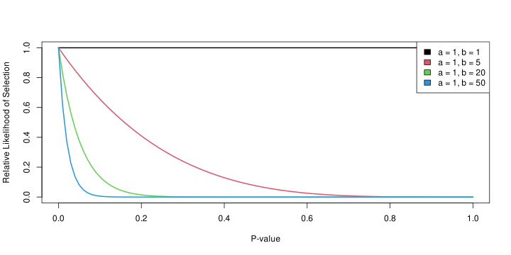
Selection Models
In R we can use the metafor::selmodel() function to implement several type of models. For example we can apply the Citkowicz and Vevea (2017) model:
sel_beta <- selmodel(fit, type = "beta")#>
#> Random-Effects Model (k = 100; tau^2 estimator: ML)
#>
#> tau^2 (estimated amount of total heterogeneity): 0.0857 (SE = 0.0255)
#> tau (square root of estimated tau^2 value): 0.2928
#>
#> Test for Heterogeneity:
#> LRT(df = 1) = 293.8104, p-val < .0001
#>
#> Model Results:
#>
#> estimate se zval pval ci.lb ci.ub
#> 0.4847 0.1020 4.7521 <.0001 0.2848 0.6846 ***
#>
#> Test for Selection Model Parameters:
#> LRT(df = 2) = 14.3271, p-val = 0.0008
#>
#> Selection Model Results:
#>
#> estimate se zval pval ci.lb ci.ub
#> delta.1 0.8174 0.0700 -2.6075 0.0091 0.6802 0.9547 **
#> delta.2 0.7017 0.2009 -1.4846 0.1376 0.3080 1.0955
#>
#> ---
#> Signif. codes: 0 '***' 0.001 '**' 0.01 '*' 0.05 '.' 0.1 ' ' 1plot(sel_beta)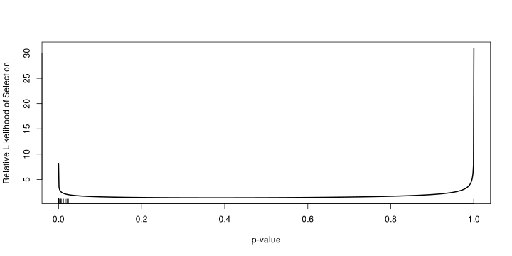
Selection Models
Let’s try the Beta selection model without publication bias:
set.seed(2023)
dat <- sim_studies(30, 0.5, 0, 30, 30)
fit <- rma(yi, vi, data = dat, method = "ML")
sel_beta <- selmodel(fit, type = "beta")
plot(sel_beta)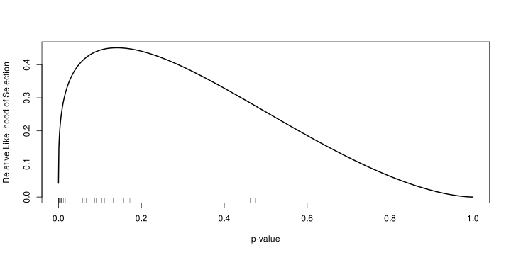
More on SM and Publication Bias
- The SM documentation of
metafor::selmodel()https://wviechtb.github.io/metafor/reference/selmodel.html - Wolfgang Viechtbauer overview of PB https://www.youtube.com/watch?v=ucmOCuyCk-c
- Harrer et al. (2021) - Doing Meta-analysis in R - Chapter 9
- McShane, Böckenholt, and Hansen (2016) for a nice introduction about publication bias and SM
- Another good overview by Jin, Zhou, and He (2015)
- See also Guan and Vandekerckhove (2016), Maier, Bartoš, and Wagenmakers (2023) and Bartoš et al. (2022) for Bayesian approaches to PB
More on SM and Publication Bias
Assessing, testing and developing sofisticated models for publication bias is surely important and interesting. But as Wolfgang Viechtbauer (the author of metafor) said:
hopefully there won’t be need for these models in the future (Viechtbauer 2021)
Extra - Simulating Publication Bias
I wrote two custom functions to generate a biased dataset based on different criteria:
- a simple step function with a threshold (e.g., \(p \leq 0.05\) then 1 else 0)
- the weight function from slide Slide 6.19
- a custom criterion (e.g., select only \(|y_i| > 0.5\))
weigth_beta <- function(x, a, b){
x^(a - 1) * (1 - x)^(b - 1)
}
weigth_2step <- function(x, th, side = "<="){
ifelse(eval(call(side, x, th)), 1, 0)
}…continue
Extra - Simulating Publication Bias
sim_pub_bias <- function(selmodel,
k,
theta,
tau2,
nmin,
nmax){
selmodel$method <- match.arg(selmodel$method, choices = c("custom", "2step", "beta"))
res <- vector(mode = "list", length = k)
i <- 1
while(i <= k){
n <- round(runif(1, nmin, nmax))
dat_i <- sim_studies(k = 1, theta = theta, tau2 = tau2, n0 = n, n1 = n)
dat_i$n <- n
dat_i <- metafor::escalc(yi = yi, vi = vi, sei = sei, data = dat_i)
dat_i <- data.frame(summary(dat_i))
if(selmodel$method == "2step"){
ppub <- weigth_2step(x = dat_i[[selmodel$param]], th = selmodel$th, side = selmodel$side)
}else if(selmodel$method == "beta"){
ppub <- weigth_beta(x = dat_i$pval, a = selmodel$a, b = selmodel$b)
}else{
ppub <- with(dat_i, eval(parse(text = selmodel$operation)))
}
if(rbinom(1, 1, ppub) == 1){
res[[i]] <- dat_i
i <- i + 1
}
}
dat <- do.call(rbind, res)
return(dat)
}Extra - Simulating Publication Bias
For example, let’s simulate a pretty simple publication bias model where we included \(k = 40\) studies. The biased criteria is that only \(p \leq 0.05\) are included.
- \(\theta = 0.5\)
- \(\tau^2 = 0\) i.e. an EE model
- \(n \sim \mathcal{U}(10, 200)\)
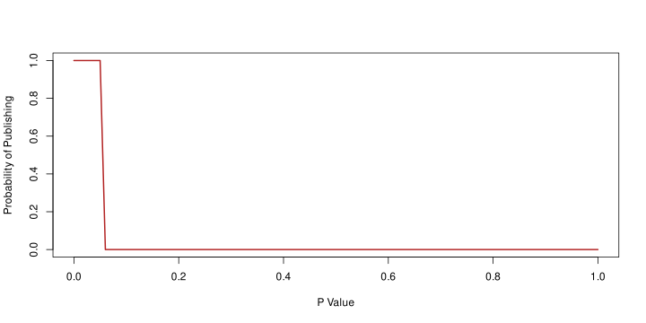
Extra - Simulating Publication Bias
set.seed(2023)
k <- 100
theta <- 0.5
tau2 <- 0.1
dat <- sim_pub_bias(selmodel = list(method = "2step", param = "pval", th = 0.05, side = "<="), k = k, theta = theta, tau2 = tau2, nmin = 10, nmax = 200)
filor::trim_df(dat)
#> yi vi sei n zi pval ci.lb ci.ub
#> 1 0.352 0.02 0.14 99 2.52 0.012 0.078 0.627
#> 2 0.605 0.022 0.147 91 4.103 0 0.316 0.894
#> 3 1.714 0.038 0.195 44 8.81 0 1.333 2.096
#> 4 0.697 0.027 0.166 71 4.208 0 0.372 1.022
#> 5 ... ... ... ... ... ... ... ...
#> 6 0.682 0.026 0.161 70 4.239 0 0.367 0.997
#> 7 0.888 0.108 0.329 28 2.698 0.007 0.243 1.533
#> 8 1.033 0.089 0.298 21 3.464 0.001 0.449 1.618
#> 9 0.974 0.01 0.1 181 9.722 0 0.777 1.17Extra - Simulating Publication Bias
fit <- rma(yi, vi, data = dat)
summary(fit)
#>
#> Random-Effects Model (k = 100; tau^2 estimator: REML)
#>
#> logLik deviance AIC BIC AICc
#> -28.2354 56.4709 60.4709 65.6611 60.5959
#>
#> tau^2 (estimated amount of total heterogeneity): 0.0811 (SE = 0.0145)
#> tau (square root of estimated tau^2 value): 0.2847
#> I^2 (total heterogeneity / total variability): 82.87%
#> H^2 (total variability / sampling variability): 5.84
#>
#> Test for Heterogeneity:
#> Q(df = 99) = 583.0508, p-val < .0001
#>
#> Model Results:
#>
#> estimate se zval pval ci.lb ci.ub
#> 0.6232 0.0321 19.4055 <.0001 0.5603 0.6862 ***
#>
#> ---
#> Signif. codes: 0 '***' 0.001 '**' 0.01 '*' 0.05 '.' 0.1 ' ' 1Clearly, \(\theta\) is overestimated because we are systematic omitting non-significant p-values. These studies are more likely to be imprecise studies thus we are probably creating a funnel plot asymmetry.
Extra - Simulating Publication Bias
egger <- regtest(fit)
funnel(fit, cex.lab = 1.2, cex = 1.2)
se <- seq(0,1.8,length=100)
lines(coef(egger$fit)[1] + coef(egger$fit)[2]*se, se, lwd=3)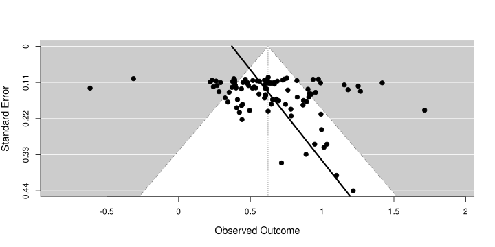
Practical meta-analysis
Oliveira et al. (2023) dataset
The meta-analysis by Oliveira et al. (2023) is about the efficacy of Internet-delivered cognitive behavioral therapy (ICBT) interventions in reducing anxiety among university students. They collected \(k = 15\) studies with a total of 1619 participants and summarized the effect using a standardized mean difference. The dataset is 02-meta-analysis/objects/oliveira2023.rds. You can also load it using data(oliveira2023):
#>
#> Study Year Target.outcome Outcome Measures mean.age
#> 1 Botella et al. 2010 SAD Anxiety disorder SAD-scale 24.40
#> 2 Day et al. 2013 Anxiety Anxiety symptoms DASS-21 23.55
#> 3 Ellis et al. 2011 Anxiety Anxiety symptoms DASS-21 19.67
#> 4 Fitzpatrick et al. 2017 Anxiety Anxiety symptoms GAD-7 22.2
#> 5 Kählke et al. 2019 SAD Anxiety disorder SIAS 26.70
#> 6 Liu et al. 2020 Anxiety Anxiety symptoms STAI-S 22.0
#> 7 McCall et al. 2018 SAD Anxiety disorder SIAS 21.86
#> 8 McCloud et al. 2020 Anxiety Anxiety symptoms HADS 24.3
#> 9 Melnyk et al. 2015 Anxiety Anxiety symptoms GAD-7 18.67
#> 10 Morris et al. 2016 Anxiety Anxiety symptoms STAI-S 20.5
#> 11 Mullin et al. 2015 Anxiety Anxiety symptoms GAD-7 27.86
#> 12 Newman et al. 2021 GAD Anxiety disorder GAD-7 19.91
#> 13 Orbach et al. 2007 Test anxiety Anxiety disorder TAI 23.67
#> 14 Richards et al. 2016 GAD Anxiety disorder GAD-7 23.82
#> 15 Sethi et al. 2010 Anxiety Anxiety symptoms DASS-21 19.47
#> sample.type guidance lenght riskofbias control.group n.exp.pos
#> 1 general n 5-8 weeks Low passive 30
#> 2 general yes 5-8 weeks Low passive 33
#> 3 other yes < = 4 weeks Low passive 13
#> 4 general n < = 4 weeks Low active 31
#> 5 general n >= 9 weeks Low passive 100
#> 6 general yes < = 4 weeks Concerns passive 40
#> 7 other n >= 9 weeks Concerns passive 30
#> 8 general n 5-8 weeks Concerns passive 58
#> 9 general n 5-8 weeks Concerns active 61
#> 10 general n 5-8 weeks Concerns passive 43
#> 11 general yes >= 9 weeks Low passive 30
#> 12 other yes >= 9 weeks Low passive 117
#> 13 general n 5-8 weeks Low active 30
#> 14 general yes 5-8 weeks Low passive 70
#> 15 other yes < = 4 weeks Concerns passive 9
#> mean.exp.pos sd.exp.pos n.control.pos mean.control.pos sd.control.pos
#> 1 7.67 5.81 25 11.28 7.45
#> 2 5.70 4.49 33 9.93 7.77
#> 3 4.46 4.91 13 9.39 5.06
#> 4 17.35 0.60 25 16.84 0.67
#> 5 36.72 13.86 100 44.36 14.05
#> 6 41.10 10.40 14 51.90 8.70
#> 7 30.73 11.12 35 41.43 13.82
#> 8 11.20 3.75 70 12.60 3.88
#> 9 4.90 3.90 32 5.40 4.70
#> 10 45.81 11.43 47 53.09 11.25
#> 11 6.09 4.01 23 8.35 5.60
#> 12 5.89 3.16 105 6.82 3.10
#> 13 47.31 9.49 28 54.25 11.31
#> 14 7.73 4.44 67 9.13 4.13
#> 15 8.60 4.10 10 13.80 3.80
#> yi vi
#> 1 -0.5389 0.0760
#> 2 -0.6588 0.0639
#> 3 -0.9576 0.1715
#> 4 0.7956 0.0779
#> 5 -0.5454 0.0207
#> 6 -1.0641 0.1069
#> 7 -0.8358 0.0673
#> 8 -0.3641 0.0320
#> 9 -0.1184 0.0477
#> 10 -0.6367 0.0468
#> 11 -0.4676 0.0789
#> 12 -0.2959 0.0183
#> 13 -0.6579 0.0728
#> 14 -0.3244 0.0296
#> 15 -1.2593 0.2528Oliveira et al. (2023) dataset
There are multiple columns with study-level features but the important variables are:
study: identifier for each studyyi: the standardized effect size. Negative effect represent a reduction of pre-post anxietyvi: the standardized effect size sampling variance
Steps
- Import the data and explore (summary statistics, plots, etc.) the variables
- Fit an equal-effects model and a random-effects model
- Intepret the results
- Intepret the heterogeneity (if relevant)
- Compare the two models. Is there any difference? Which model is more appropriate
- Plot the model results using a forest plot
- Create a funnel plot and comment the pattern
- Analyze the publication bias using the Egger regression and comment the result
- Try to apply the trim and fill method and comment the result
Dear, Dutton, and Fox (2019) dataset
Eye cues have been shown to stimulate rapid, reflexive, unconscious processing and in many experimental settings to cue increased prosocial and decreased antisocial behaviour (Dear, Dutton, and Fox 2019).
The “watching eyes” effect refers to a strange phenomenon whereby the mere presence of pictures of eyes or stylized eye images is enough to cause people to adjust their behavior
- they found \(k = 15\) studies with a total of 2035 participants
- compared to previous examples, the included studies used a 2x2 design and the effect size is calculated counting the number of people doing antisocial actions (or not) according to the experimental condition (with and without eye cues).
- the effect size is the \(log\) Odds Ratio and can be calculated using
metafor::escalc()
Dear, Dutton, and Fox (2019) dataset
The dataset can be found in 02-meta-analysis/objects/dear2019.rds or using data(dear2019):
#> Citation N.NO.EYES CTRL.ASB.YES CTRL.ASB.N N.EYES
#> 1 ErnestJones.etal.2011.Litter 289 98 175 273
#> 2 Bateson.etal.2013.Litter 297 83 214 305
#> 3 Baillon.etal2013.JoD 49 19 30 51
#> 4 Zengerink.2013.Litter 314 170 144 630
#> 5 Bateson.etal.2015.Litter.Exp1 137 23 114 147
#> 6 Bateson.etal.2015.Litter.Exp2 97 25 72 216
#> EYES.ASB.YES EYES.ASB.NO
#> 1 56 233
#> 2 80 225
#> 3 9 42
#> 4 297 333
#> 5 8 139
#> 6 31 185Steps
- Import the data and explore (summary statistics, plots, etc.) the variables
- Try to calculate the effect size (log Odds Ratio) using
metafor::escalc()(see the documentation?metafor::escalc()) - Do the same steps as the previous meta-analysis
References Download .bib file
Bartoš, František, Maximilian Maier, Daniel S Quintana, and Eric-Jan Wagenmakers. 2022. “Adjusting for Publication Bias in JASP and r: Selection Models, PET-PEESE, and Robust Bayesian Meta-Analysis.” Adv. Methods Pract. Psychol. Sci. 5 (3): 251524592211092. https://doi.org/10.1177/25152459221109259.
Borenstein, Michael, Larry V Hedges, Julian P T Higgins, and Hannah R Rothstein. 2009. “Introduction to Meta-Analysis.” https://doi.org/10.1002/9780470743386.
Citkowicz, Martyna, and Jack L Vevea. 2017. “A Parsimonious Weight Function for Modeling Publication Bias.” Psychol. Methods 22 (1): 28–41. https://doi.org/10.1037/met0000119.
Dear, Keith, Kevin Dutton, and Elaine Fox. 2019. “Do ‘Watching Eyes’ Influence Antisocial Behavior? A Systematic Review & Meta-Analysis.” Evol. Hum. Behav. 40 (3): 269–80. https://doi.org/10.1016/j.evolhumbehav.2019.01.006.
Duval, S, and R Tweedie. 2000. “Trim and Fill: A Simple Funnel-Plot-Based Method of Testing and Adjusting for Publication Bias in Meta-Analysis.” Biometrics 56 (2): 455–63. https://doi.org/10.1111/j.0006-341x.2000.00455.x.
Guan, Maime, and Joachim Vandekerckhove. 2016. “A Bayesian Approach to Mitigation of Publication Bias.” Psychon. Bull. Rev. 23 (1): 74–86. https://doi.org/10.3758/s13423-015-0868-6.
Harrer, Mathias, Pim Cuijpers, Toshi Furukawa, and David Ebert. 2021. Doing Meta-Analysis with r: A Hands-on Guide. 1st ed. London, England: CRC Press.
Hedges, Larry V, and Jacob M Schauer. 2019. “Statistical Analyses for Studying Replication: Meta-Analytic Perspectives.” Psychol. Methods 24 (5): 557–70. https://doi.org/10.1037/met0000189.
———. 2021. “The Design of Replication Studies.” J. R. Stat. Soc. Ser. A Stat. Soc. 184 (3): 868–86. https://doi.org/10.1111/rssa.12688.
Higgins, Julian P T, and Simon G Thompson. 2002. “Quantifying Heterogeneity in a Meta-Analysis.” Stat. Med. 21 (11): 1539–58. https://doi.org/10.1002/sim.1186.
Jin, Zhi-Chao, Xiao-Hua Zhou, and Jia He. 2015. “Statistical Methods for Dealing with Publication Bias in Meta-Analysis.” Stat. Med. 34 (2): 343–60. https://doi.org/10.1002/sim.6342.
Maier, Maximilian, František Bartoš, and Eric-Jan Wagenmakers. 2023. “Robust Bayesian Meta-Analysis: Addressing Publication Bias with Model-Averaging.” Psychol. Methods 28 (1): 107–22. https://doi.org/10.1037/met0000405.
McShane, Blakeley B, Ulf Böckenholt, and Karsten T Hansen. 2016. “Adjusting for Publication Bias in Meta-Analysis: An Evaluation of Selection Methods and Some Cautionary Notes: An Evaluation of Selection Methods and Some Cautionary Notes.” Perspect. Psychol. Sci. 11 (5): 730–49. https://doi.org/10.1177/1745691616662243.
Oliveira, Cláudia, Mara Pacheco, Janete Borges, Liliana Meira, and Anita Santos. 2023. “Internet-Delivered Cognitive Behavioral Therapy for Anxiety Among University Students: A Systematic Review and Meta-Analysis.” Internet Interv. 31 (100609): 100609. https://doi.org/10.1016/j.invent.2023.100609.
Orwin, Robert G. 1983. “A fail-SafeN for Effect Size in Meta-Analysis.” J. Educ. Stat. 8 (2): 157–59. https://doi.org/10.3102/10769986008002157.
Rosenberg, Michael S. 2005. “The File-Drawer Problem Revisited: A General Weighted Method for Calculating Fail-Safe Numbers in Meta-Analysis.” Evolution 59 (2): 464–68. https://doi.org/10.1111/j.0014-3820.2005.tb01004.x.
Rosenthal, Robert. 1979. “The File Drawer Problem and Tolerance for Null Results.” Psychol. Bull. 86 (3): 638–41. https://doi.org/10.1037/0033-2909.86.3.638.
Shi, Linyu, and Lifeng Lin. 2019. “The Trim-and-Fill Method for Publication Bias: Practical Guidelines and Recommendations Based on a Large Database of Meta-Analyses: Practical Guidelines and Recommendations Based on a Large Database of Meta-Analyses.” Medicine (Baltimore) 98 (23): e15987. https://doi.org/10.1097/MD.0000000000015987.
Viechtbauer, Wolfgang. 2005. “Bias and Efficiency of Meta-Analytic Variance Estimators in the Random-Effects Model.” J. Educ. Behav. Stat. 30 (3): 261–93. https://doi.org/10.3102/10769986030003261.
———. 2010. “Conducting Meta-Analyses in R with the metafor Package.” Journal of Statistical Software. https://doi.org/10.18637/jss.v036.i03.
———. 2021. “Selection Models for Publication Bias in Meta-Analysis. Presentation at ESMARConf2021.” figshare. https://doi.org/10.6084/M9.FIGSHARE.13637900.V1.
Footnotes
If you are interested in meta-analysis simulation we wrote a preprint https://psyarxiv.com/br6vy/↩︎
see https://www.jepusto.com/simulating-correlated-smds/ for a nice blog post about simulations↩︎
See Harrer et al. (2021) (Chapter 5) and Hedges and Schauer (2019) for an overview about the Q statistics↩︎
see https://www.meta-analysis-workshops.com/download/common-mistakes1.pdf↩︎
Thanks to the Wolfgang Viechtbauer’s course https://www.wvbauer.com/doku.php/course_ma↩︎